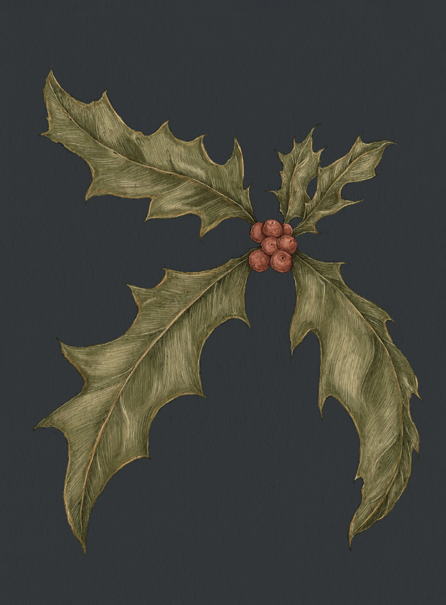

Plate HOLLY
The Language of Flowers
Holly Study

Holly
Ilex
Definition: A plant associated in floriography with foresight and protection against misfortune.
Meaning
Foresight
Origin
In many European pagan traditions, holly branches were hung in homes to protect against misfortune.
This custom was later adopted for the Christmas holidays by the Victorians, who loved to indulge in
superstition. Holly often figured in fortune-telling games as well; in Wales, it was said that if a
girl ran seven laps around a holly tree one way, then seven times around the other way, her future
husband would appear to her.
Pair With
- Eucalyptus to indicate looking out for a friend
- Lily of the Valley to show that better times are on the horizon